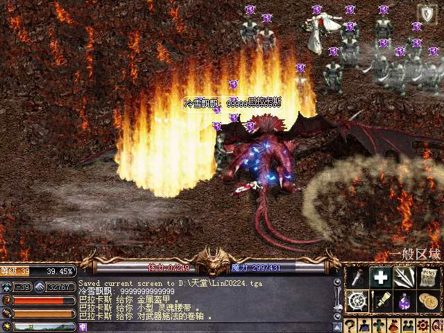

| 2003年12月20日
怪物AI太過聰明？
來源：美國天堂討論區
美國伺服器在更新了怪物的人工智能後，有不少玩家都感到怪物太過聰明，例如牠們能夠在數個畫面外"看"到你，結果即使你不移動，怪物們仍會在四方八面蜂擁而上，而且你不能跑出牠們的視線，即使你跑出牠們幾個畫面，牠們仍能跟著你；另外會使用遠距離的怪物更能在你的視線範圍外攻擊你，你只會看到HP減少，但卻不知道怪物在那一個方向攻擊你。不少玩家都覺得遺忘之島和傲慢之塔都比以往難打得多，當中以傲慢之塔最為嚴重，因為每個樓梯的入口，都會有數十隻怪物等候著他們的午餐。
同時亦有玩家指出只有怪物的AI改進了，但自己的寵物卻一如以往地愚笨，這樣可能有點不公平。
大陸天堂屠龍熱
來源：網游先鋒天堂論壇
自從大陸其中一個伺服器成功屠龍後，各伺服器紛紛組隊殺龍，掀起了一陣的屠龍熱潮，連最難打的地龍也被擊倒了，究竟他們用甚麼方法呢？相信以下圖片會給大家一個滿意的答案，圖片取自網游先鋒天堂論壇各大討論串：




|